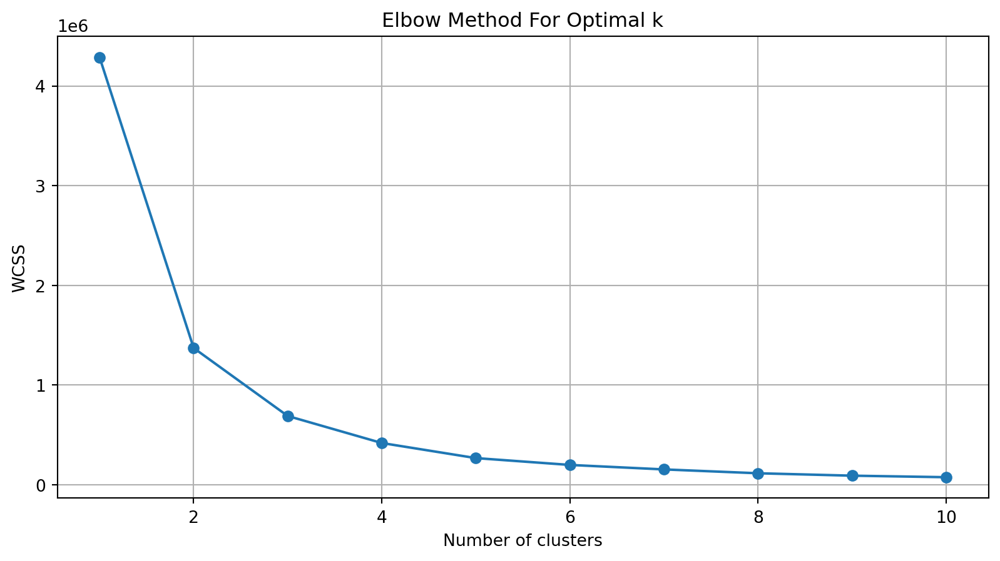
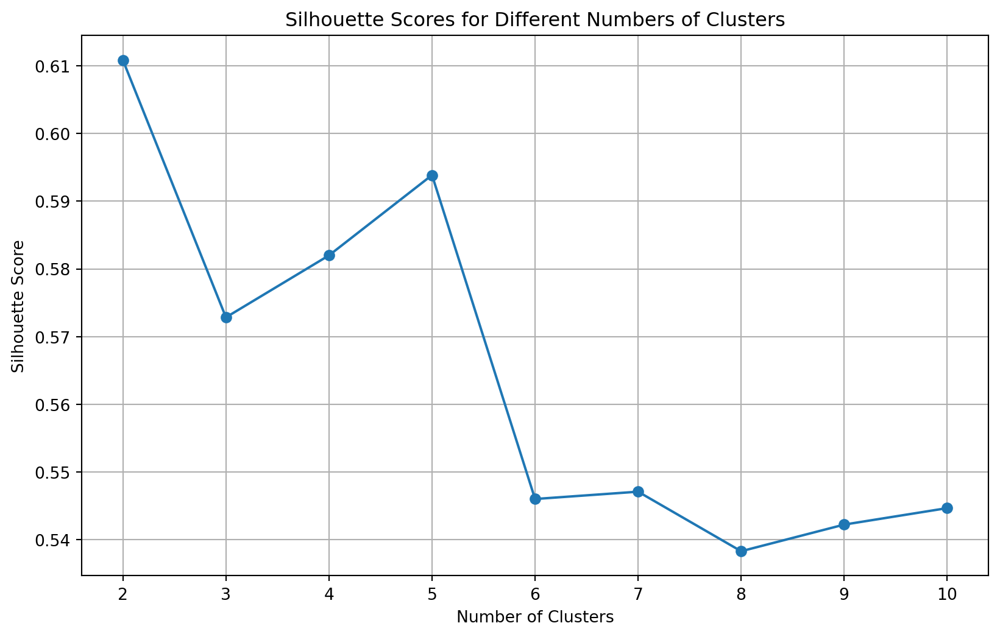

from sklearn.cluster import KMeans, Birch, AgglomerativeClustering, DBSCAN
from scipy.cluster.hierarchy import dendrogram, linkage
import pandas as pd
import matplotlib.pyplot as plt
from sklearn.metrics import silhouette_score
from sklearn.preprocessing import OneHotEncoder, StandardScaler
import numpy as np
import warnings
warnings.filterwarnings('ignore')Clustering
Introduction
For this project we are going to use clustering on DOSE EQUIVALENT RATE (nSv/h) and try to find out that if we are able to find out if we are able to find out and group different range of rate.
Theory
K-Means Clustering
K-Menas clustering start by randomly k point and then interactively moves them to shorten the distance until getting closer to the point. Morover, when choosing the model, the Elbow Methold is used to determined the suitable number of clusters. The Silhouette Method assesses how similar an object is to its own cluster compared to others.
DBSCAN
This types of cluster point out what point are closer tougher, and make outlier lie alone in low density area. DBSCAN would form clusters in dense areas and identify isolated trees in sparse areas as outliers. Moreover, DBSCAN uses epsilon to find the neighborhood.
Hierarchical Clustering
This model builds a hierarchical of cluster by using divisive or agglomerate approach. Like building a decision tree with the point on the leave. Dendrograms are used to visualize the formation of clusters in hierarchical clustering.
Methods
Data selection
data = pd.read_csv('../data/Cleaned/merged_data.csv')
data = data.sample(n=10000)
# take only the columns that are needed for clustering
data_cluster = data[['DOSE EQUIVALENT RATE (nSv/h)']]K-Means
Elbow
wcss = [] # Within-cluster sum of squares
for i in range(1, 11):
kmeans = KMeans(n_clusters=i, init='k-means++', random_state=42)
kmeans.fit(data_cluster)
wcss.append(kmeans.inertia_)
# Plotting the results of the Elbow method
plt.figure(figsize=(10, 5))
plt.plot(range(1, 11), wcss, marker='o')
plt.title('Elbow Method For Optimal k')
plt.xlabel('Number of clusters')
plt.ylabel('WCSS')
plt.grid(True)
plt.show()
Silhousette Score
X = data[["DOSE EQUIVALENT RATE (nSv/h)"]]
# Finding the optimal number of clusters using silhouette scores
silhouette_scores = []
k_range = range(2, 11) # Testing for number of clusters from 2 to 10
for k in k_range:
kmeans = KMeans(n_clusters=k, random_state=0)
cluster_labels = kmeans.fit_predict(X)
silhouette_avg = silhouette_score(X, cluster_labels)
silhouette_scores.append(silhouette_avg)
# Plotting the silhouette scores
plt.figure(figsize=(10, 6))
plt.plot(k_range, silhouette_scores, marker='o')
plt.title("Silhouette Scores for Different Numbers of Clusters")
plt.xlabel("Number of Clusters")
plt.ylabel("Silhouette Score")
plt.xticks(k_range)
plt.grid(True)
plt.show()
scaler = StandardScaler()
data_scaled = scaler.fit_transform(data[['DOSE EQUIVALENT RATE (nSv/h)']])
# Performing k-means clustering with 3 clusters
kmeans = KMeans(n_clusters=3, random_state=0)
clusters = kmeans.fit_predict(data_scaled)
# Adding the cluster information to the original dataframe
data['Cluster'] = clusters
# Display the first few rows with cluster labels
clustered_data_head = data.head()
# Summary of clusters
cluster_summary = data['Cluster'].value_counts()
clustered_data_head, cluster_summary( LOCATION_NAME DOSE EQUIVALENT RATE (nSv/h) Cluster
471595 TX: HOUSTON 36.0 0
132294 FL: JACKSONVILLE 52.0 1
188384 IL: CHAMPAIGN 70.0 1
486675 TX: SAN ANGELO 47.0 0
358506 NY: YAPHANK 40.0 0,
Cluster
1 4306
0 3857
2 1837
Name: count, dtype: int64)DBSCAN Clustering
eps_values = np.arange(0.1, 2.0, 0.1)
min_samples = 5 # Default value for min_samples
# Extracting the 'DOSE EQUIVALENT RATE (nSv/h)' column for clustering
dose_data = data['DOSE EQUIVALENT RATE (nSv/h)'].values.reshape(-1, 1)
# Dictionary to store the number of clusters for each eps value
num_clusters = {}
# Perform DBSCAN clustering for each eps value and store the number of clusters
for eps in eps_values:
db = DBSCAN(eps=eps, min_samples=min_samples).fit(dose_data)
labels = db.labels_
# Number of clusters in labels, ignoring noise if present
n_clusters = len(set(labels)) - (1 if -1 in labels else 0)
num_clusters[eps] = n_clusters
# Plotting the results
plt.figure(figsize=(10, 6))
plt.plot(list(num_clusters.keys()), list(num_clusters.values()), marker='o')
plt.title('DBSCAN Clustering: Number of Clusters for Different eps Values')
plt.xlabel('eps Value')
plt.ylabel('Number of Clusters')
plt.grid(True)
plt.show()eps_selected = 1.0
db_selected = DBSCAN(eps=eps_selected, min_samples=min_samples).fit(dose_data)
labels_selected = db_selected.labels_
# Number of clusters in labels, ignoring noise if present
n_clusters_selected = len(set(labels_selected)) - (1 if -1 in labels_selected else 0)
# Adding the cluster labels to the original dataset
data['Cluster'] = labels_selected
# Displaying the number of clusters and the first few rows of the dataset with cluster labels
n_clusters_selected, data.head()(2,
LOCATION_NAME DOSE EQUIVALENT RATE (nSv/h) Cluster
471595 TX: HOUSTON 36.0 0
132294 FL: JACKSONVILLE 52.0 0
188384 IL: CHAMPAIGN 70.0 0
486675 TX: SAN ANGELO 47.0 0
358506 NY: YAPHANK 40.0 0)Hierarchical Clustering
dose_data = data[['DOSE EQUIVALENT RATE (nSv/h)']].values
# Using agglomerative hierarchical clustering
linked = linkage(dose_data, method='ward')
# Plotting the dendrogram
plt.figure(figsize=(10, 7))
dendrogram(linked, labels=data['LOCATION_NAME'].values, orientation='top')
plt.title('Hierarchical Clustering Dendrogram (Agglomerative)')
plt.xlabel('Location')
plt.ylabel('Distance')
plt.show()
Results
Hierarchical clustering proved to be illustrative for understanding data relationships, while K-means offered simplicity and ease of implementation. DBSCAN’s capacity to handle noise and identify outliers was uniquely beneficial.
Conclusions
Our exploration of clustering method shows key insights into the inherent structures within our dataset. Hierarchical clustering proved to be illustrative for understanding data relationships, while K-means offered simplicity and ease of implementation. DBSCAN’s capacity to handle noise and identify outliers was uniquely beneficial.
References
References
US EPA, OAR. 2021. “RadNet CSV File Downloads.” https://www.epa.gov/radnet/radnet-csv-file-downloads.